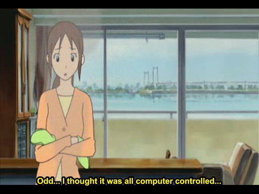

Searea Apartment Complexes
The biggest contender among all the inconsistent Adventure locations is the place that appears in more episodes than any other, is depicted from the most angles in the most detail, and yet in doing that contradicts itself completely. We are referring, of course, to the apartment occupied by the Yagamis, Taichi and Hikari. It's worth noting that both Motomiya Daisuke and Ishida Yamato appear to live in these complexes as well, but many more backgrounds of this location appear in the context of them being the home of the Yagami family.
Taichi and Hikari's residence is, without a doubt, part of the group situated directly in front of Odaiba-kaihinkoen Station. It is shown first in Koromon Tōkyō Daigekitotsu!, episode 21, when Taichi and Koromon initially return from the Digital World. (Incidentally, it is a little-noticed fact that this episode was aired in Japan on August 1, 1999, which would later come to be known as "Odaiba Memorial Day".) In this first appearance both the outside of the building and the inside are depicted in great detail. Taichi and Koromon are seen walking from the area they have landed, the Center Promenade near Palette Town, down past Odaiba-kaihinkoen Station and then into the complex. It is not immediately apparant which building he enters, but as he stands in front of the door, the back side of Fuji TV is visible behind him, a definite impossibility.
...it took three separate trips, some of which included looking out from the top floor of the building, to reach this conclusion. There is room to argue, though, that the series depicts their apartment as the bottom-left one, while the movie is just a flat-out contradiction. None of the buildings are really situated in a way where one could easily see the ferris wheel from one window and the bay from another. The placement of the buildings behind Hikari in balcony scenes, though, seem to indicate that they are in the top left building, which does have an entrance facing the wheel, though it would be obscured by the building opposite, and you MIGHT be able to see Fuji from there, but not at the same time as the wheel and certainly not as it appears behind Taichi in episode 21.
This image adds so much insult to injury that it's almost worth discarding right off the bat. You can see one of the complexes behind him (there are four in total and this design does not appear elsewhere on the island), but what's that behind the other apartment? Fuji TV!? Uh, no. If he was in one of the buildings on the left side of the map, either the bridge or the ferris wheel would be visible...and the two right side buildings are either too far, from the wrong angle - if you could see Fuji from the rightmost building, you would certainly be looking at its side - or both. To make it worse, there are supports visible on the hachitama (the ball-shaped observatory) which are only present on the BACK. So I can't help but think that this one was just the case of a confused animator.
At the time of the series' airing, the area between the Searea complexes and Tokyo Teleport Station was mostly empty. The Suntory building came around in 2004, interrupting the view between the apartments and the Palette Town ferris wheel. The Daiba Frontier Building to the southwest of Suntory was built in 1995, before the complexes (1996) and at least partially blocks the Ferris Wheel from the leftmost buildings.
Here's a photo taken from Daiba-koen, and as you can see, with the Suntory there the wheel is obscured. It's possible that if the Yagamis lived in the building closer to the beach, since it's been shown that they are on the second-highest floor, the other building might be low enough to view the ferris wheel from unobstructed.

But...it might only be possible if one of the two buildings up and vanished.Hikari's balcony is also depicted with one of the Searea Tomin Towers (on the left hand side in this photograph) in the background, which is consistent with the idea of them being in the apartment closest to the beach.
Shots from the balcony would seem to indicate many skyscrapers across the way, and the only place that could be possible would be the beach building...
(Sorry...Google Earth photo.)
Except that the balcony style on that building is different from what's seen in the show, AND the shots of Tailmon observing Hikari are impossible from that building.
AND the image of Taichi looking up at his apartment complex has the northernmost apartment in the background.
Taichi running down the stairs (these are on either side of the 25 Porticos public art) would indicate that he came from the center building.
Oh, and in case you were wondering, the door designs don't match, at least not in the center apartment.
I've tried to reason this out so many times I'm pretty much sick of talking about it. Initially I thought they were being deliberately vague about the building to protect the privacy of the inhabitants of the apartment (since they stated the apartment number, #1306, in the show). At the same time, no other Chosen had their residence so finely detailed. I honestly believed that #1306 must have been occupied by someone who worked on Digimon Adventure, an employee, an animator, even the producer. I felt they would not have so deliberately shown the finer details if the apartment in question did not belong to a staff member, especially as EVERY other Chosen's house was a big mystery. [Only Koushirou/Jou's place was ever depicted, with its name changed, and not in enough detail to actually find it. (Eagle-eyed fans who know their Odaiba layout would only be able to spot it in a late episode of 02.)]
This may still be the case, and some details were simply changed by mistake (i.e. the location of Fuji) or for artistic license (the balcony design), but we will probably never know for sure.
The final nail in the coffin is the placement of the 25 Porticos in two scenes. The art is visible, though not finely detailed, in this image, along with the four Searea Gobangai buildings that exist in real life:

The actual appearance of the 25 Porticos in the show depict them as leading right up to the building as Miko drops the Digivice - however, if you refer to the first map on this page, you can see that they neither begin nor end at any of the buildings. At the north end of the Porticos is a street; at the south, a mirror (part of the artwork) and beyond that, the fenced-off stairs area (the entire area is built on a raised platform; at the south end of the Porticos is the stairs to get to ground level). This shot and another in 02 would have the viewer believe that there is a fifth building present.
{kind=link}
{kind=link}
(The Suntory building was not present in 2000 - that space was entirely clear.)
If that were the case, then perhaps this fictional fifth building really would face the wheel on one side and the Bay on the other, but it would not have Hikari's balcony view of the Tomin Tower, and the opening scenes from "Bokura no War Game!" and the scene from 02 episode 7 ("Hikari no Kioku") where Taichi and Yamato meet between the buildings, would be physically impossible.
Put simply, the images depicting the Yagami residence are too inconsistent to even give the viewer a hint which building it might actually be. Depending on which scene or which episode, it could be any of the four actual buildings, or the imaginary fifth.